大家好，我是bytezhou，本篇我们将自己动手写一个操纵微信公众号的MCP Server，该Server部署在本地，通过--transport stdio的方式暴露给Claude Code。通过该MCP Server，可以在CC中直接用人类语言操作我们的公众号，非常强大。不废话，下面直接进入主题。
1.环境
本次开发采用Java技术栈，所有的需规、设计、实现、测试、bug修复、部署均由 Claude Code 100%完成，我仅进行流程编排与审核，整体环境如下：
- everything-claude-code插件: 1.10.0（https://github.com/affaan-m/everything-claude-code）
- JDK: 17
- Spring AI: 1.1.4
- Spring Boot: 3.4.4
- weixin-java-mp: 4.8.0 (https://github.com/binarywang/WxJava，很出名的微信开发 Java SDK)
上述组件说明如下：
- everything-claude-code插件确实是CC的一个神器，但过于"全"、反而有些"臃肿"，根据个人情况，可能要去掉一些Hook、或MCP配置（都可以让CC代劳）。
- Spring AI是Spring专门为AI应用开发封装的一套SDK（https://spring.io/projects/spring-ai），主流的功能都支持，比如向量数据库、MCP集成、RAG等。（所有的文档查阅、使用方法检索这些，都可以让CC代劳）
- weixin-java-mp是进行微信公众号开发的一个SDK，高star项目，目前最新的稳定版本是4.8.0，封装了几乎所有的公众号开放API。
最后，大致的结构如下：
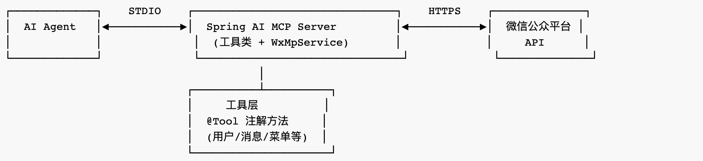
2.架构、配置、核心代码
项目依赖与配置
首先，你可以直接让CC创建一个Spring AI的标准demo项目，然后去掉文本生成（即聊天）相关的依赖，集成MCP Server开发的依赖（stdio方式），添加weixin-java-mp组件（4.8.0）的依赖，再调整项目配置和代码，最终的pom文件的主要依赖如下：
<dependencyManagement>
<dependencies>
<dependency>
<groupId>org.springframework.ai</groupId>
<artifactId>spring-ai-bom</artifactId>
<version>1.1.4</version>
<type>pom</type>
<scope>import</scope>
</dependency>
</dependencies>
</dependencyManagement>
<dependencies>
<!-- Spring AI - MCP Server -->
<dependency>
<groupId>org.springframework.ai</groupId>
<artifactId>spring-ai-starter-mcp-server</artifactId>
</dependency>
<dependency>
<groupId>com.github.binarywang</groupId>
<artifactId>weixin-java-mp</artifactId>
<version>4.8.0</version>
</dependency>
<!-- Test -->
<dependency>
<groupId>org.springframework.boot</groupId>
<artifactId>spring-boot-starter-test</artifactId>
<scope>test</scope>
</dependency>
</dependencies>
主要的项目配置如下：
spring:
application:
name: spring-ai-demo
ai:
mcp:
server:
name: spring-ai-mcp-server
version: 1.0.0
transport: stdio
整体架构
有了标准项目结构后，就可以按照SDD范式开发了（不清楚的朋友，可以看看往期SDD的文章）。
比如，你要先让CC帮你把这个微信公众号MCP Server的需求规范理出来，很简单，直接告诉它参考相关api文档就行：
1.请查阅微信公众号的开发文档和api手册。
2.@pom.xml 请参考pom文件中的第三方依赖`weixin-java-mp`的相关文档和使用方式的封装。
根据上述2种方式综合得到的信息，提取出微信公众号的基本操作能力，作为当前Spring AI项目的MCP Server的主要工具能力。
请综合规划，根据上述要求生成当前项目MCP Server的需求规范文档。
后面的技术方案规划、TDD循环方式的开发过程等，我就不赘述了。
完整架构如下：
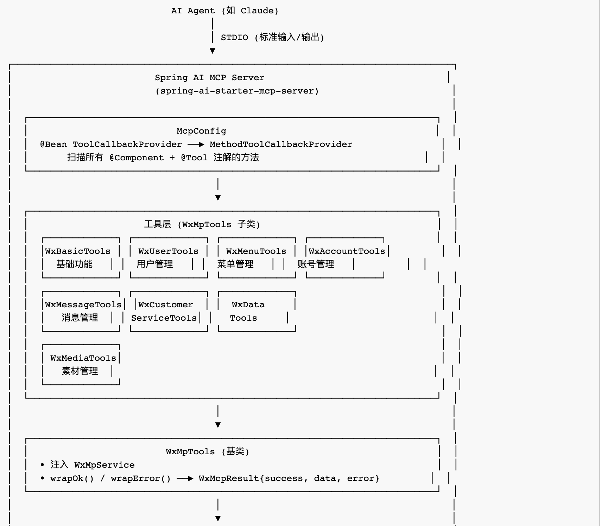
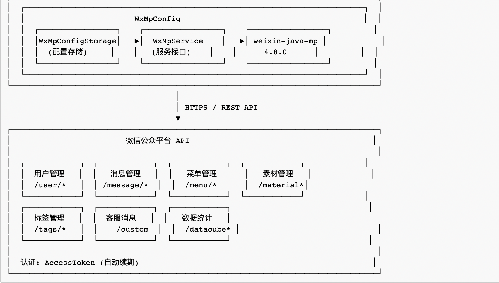
整个交互流程如下：
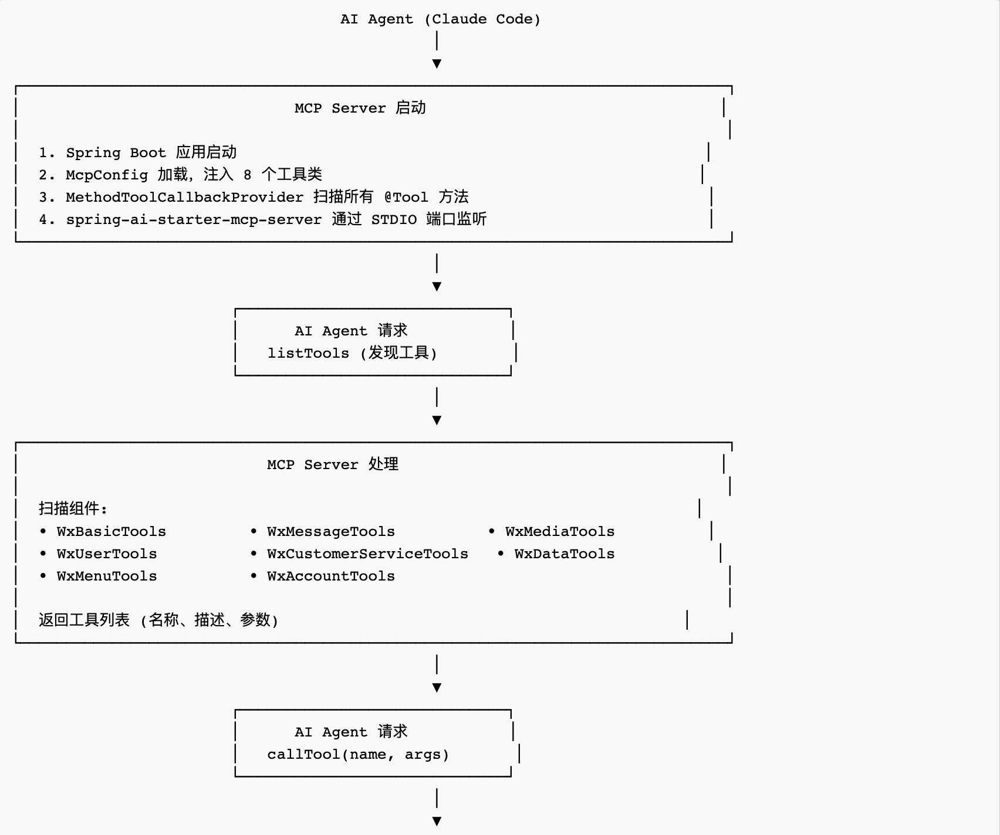
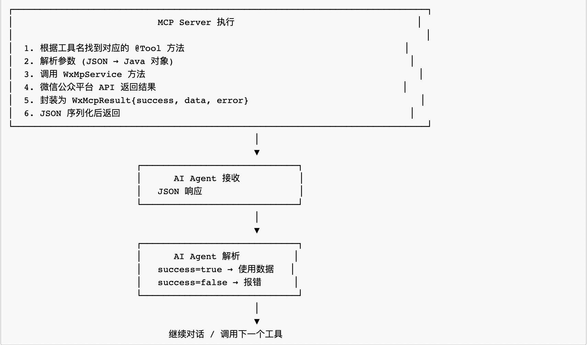
核心代码
Tool的实现
我们来看一个Tool的实现例子：获取用户信息
|
|
- @Tool 注解：标明该方法是MCP Server提供的一个工具，该工具可被AI Agent自动发现、调用。其中，工具的元数据
description字段很重要，是该工具向LLM的"自我介绍"，LLM判断要调用哪个工具时，根据该description字段的信息进行匹配判定。比如，用户说"查一下公众号的用户信息"，Claude Code在所有工具的description里进行语义匹配，最终判定getUserInfo工具最合适，就触发调用getUserInfo工具。和前面介绍的Skill的元数据中description的作用类似。 - @ToolParam 注解：标明工具的参数。LLM在决定调用某个工具时，该字段就是LLM要填充的调用参数。其中，
required = false表示非必填参数(可有可无)。
Tool的注册
@Configuration
public class McpConfig {
/**
* Registers all @Tool-annotated methods from tool classes as MCP tools.
* Add more tool objects to MethodToolCallbackProvider.builder() as needed.
*/
@Bean
public ToolCallbackProvider toolCallbackProvider(
WxBasicTools wxBasicTools,
WxMessageTools wxMessageTools,
WxUserTools wxUserTools,
WxMenuTools wxMenuTools,
WxAccountTools wxAccountTools,
WxCustomerServiceTools wxCustomerServiceTools,
WxDataTools wxDataTools,
WxMediaTools wxMediaTools
) {
return MethodToolCallbackProvider.builder()
.toolObjects(
wxBasicTools,
wxMessageTools,
wxUserTools,
wxMenuTools,
wxAccountTools,
wxCustomerServiceTools,
wxDataTools,
wxMediaTools
)
.build();
}
}
Spring AI通过MethodToolCallbackProvider把所有带@Tool注解的方法，注册成该MCP Server的工具，然后在AI Agent连接过来、初始协商完成后，把所有注册的工具（包括工具元数据）返给AI Agent，完成工具自动发现的闭环。
CC进行MCP配置
最后，在Claude Code这边进行MCP连接配置（项目级MCP配置），在当前项目根目录下 .mcp.json中，添加MCP配置：
{
"mcpServers": {
"wx-mcp": {
"command": "java",
"args": [
"-jar",
"target/spring-ai-demo-0.0.1-SNAPSHOT.jar"
],
"env": {
"WEIXIN_APP_ID": "${WEIXIN_APP_ID}",
"WEIXIN_APP_SECRET": "${WEIXIN_APP_SECRET}",
"WEIXIN_TOKEN": "${WEIXIN_TOKEN}",
"WEIXIN_AES_KEY": "${WEIXIN_AES_KEY}"
}
}
}
}
其中，WEIXIN_APP_ID等4个环境变量，需要在微信公众号里获取，然后通过export WEIXIN_APP_ID=your_APP_ID来设置。transport方式默认是stdio，这里没有显示设置。
MCP配置好后，启动claude，输入/mcp看一下配置的wx-mcp连接情况，若是"connected"就表示ok了，点进去还可以看到注册的30多个工具、以及每个工具的详情：
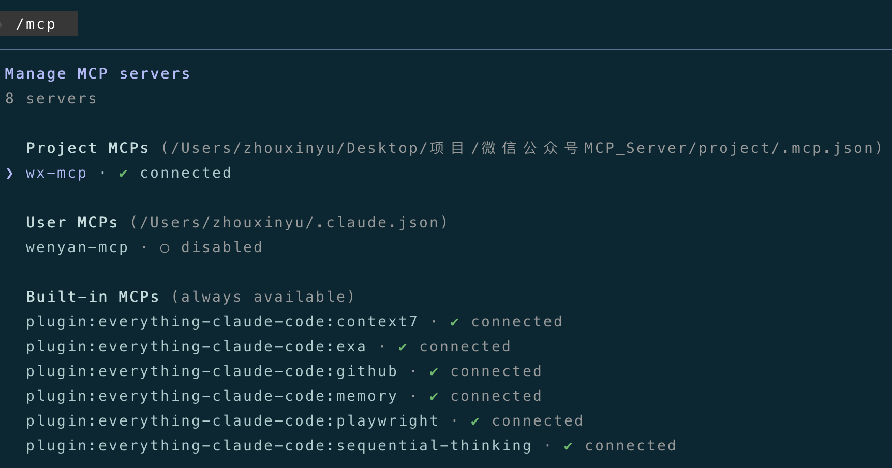
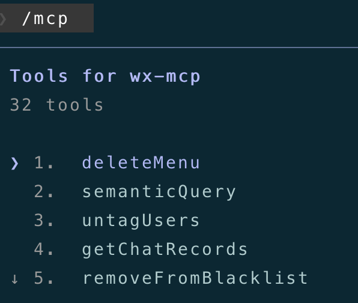
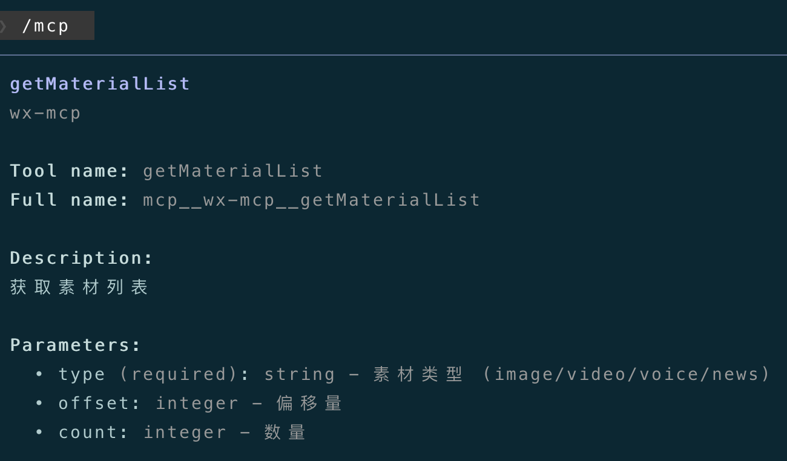
3.使用效果
下面，我们在CC中直接用人类语言操作公众号，看一下效果
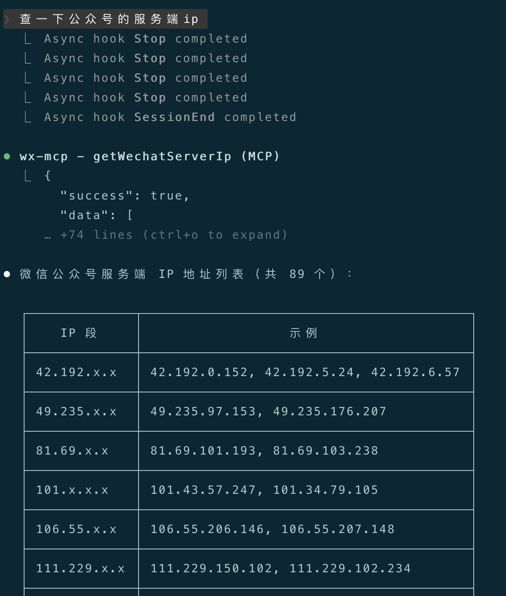
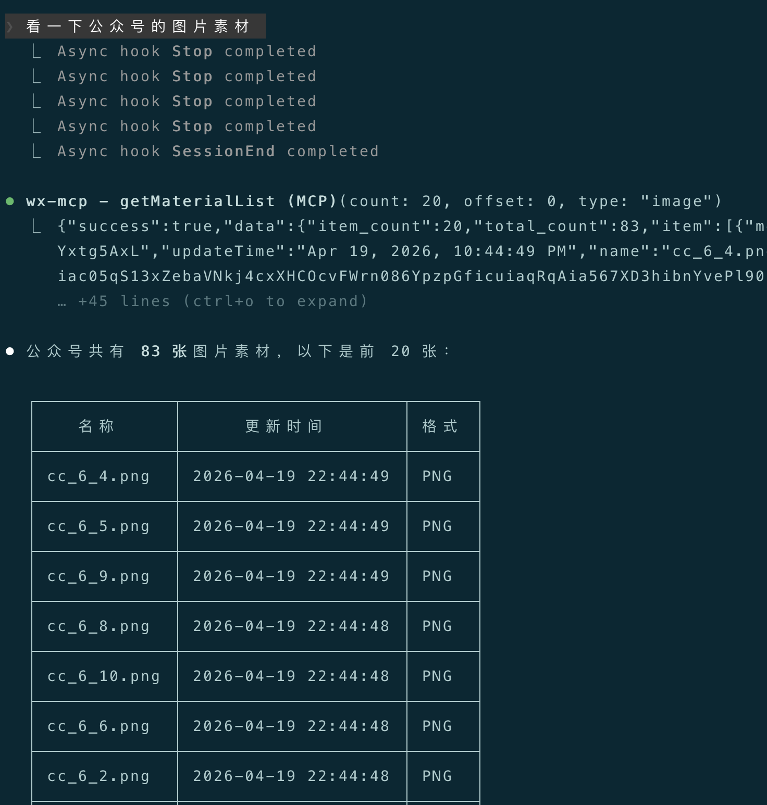
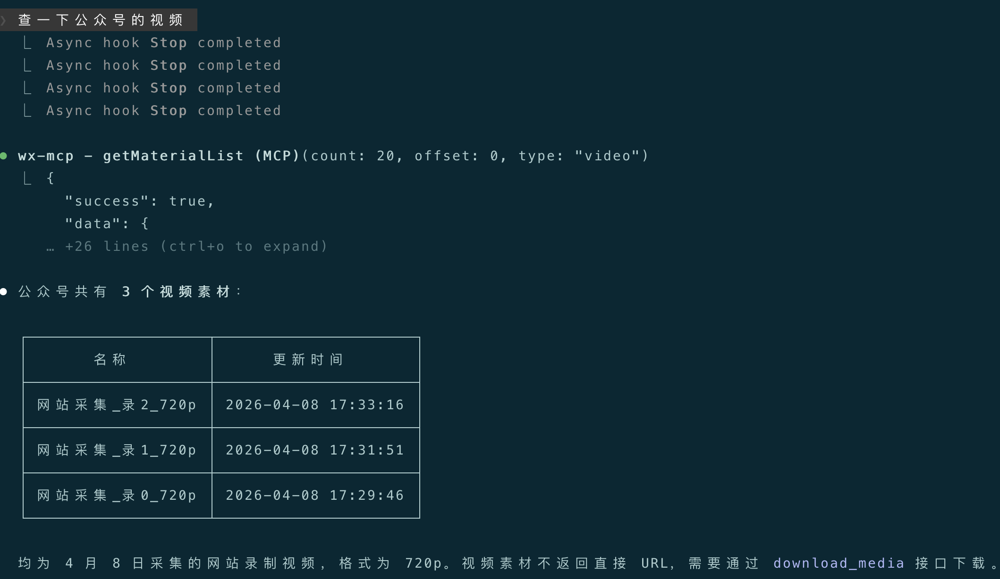
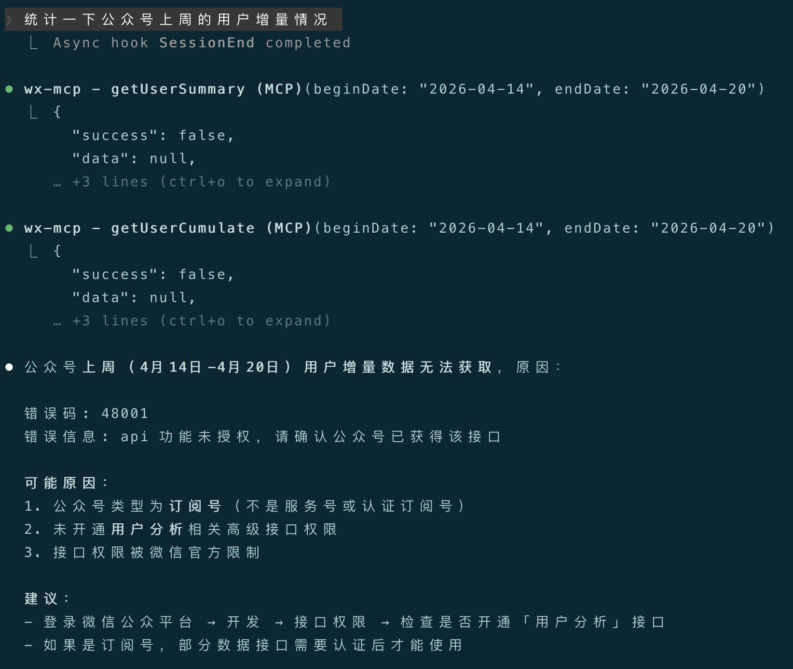
可以看到，CC准确的理解了我们的语言意图，调用了相关的公众号MCP Tool来完成我们的请求（最后一个api调用，因为权限问题未能成功）。
4.结语
本篇介绍了用Java技术栈来开发一个自定义的微信公众号MCP Server，让Claude Code可以直接操作我们的公众号，等于"自定义"了CC的能力。下一篇，我将介绍Claude Code的"分身"——SubAgent。
感谢你点开这篇文章，欢迎关注我的公众号：10年码农，纯技术分享，一起在AI时代探索未来！

客官您满意的话，感谢打赏。